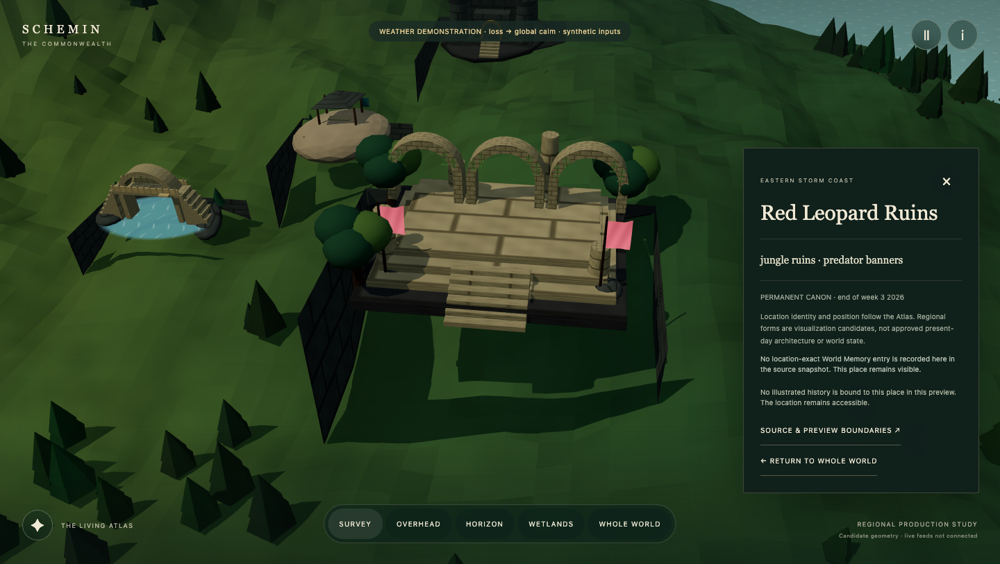

COMMONWEALTH OBSERVER / PHYSICAL WEBGL2 / READ-ONLY ENGINEERING EVIDENCE
Red Leopard Ruins — arch leaf-surface candidate
Compare the original single-triangle leaflets (left) with one-mesh, curved lamina on the same 12 existing arch-rooted creeper strands (right). No location identity, arch geometry, banners, visit state, canon or history changed. Inspect at full image resolution for the subtle geometric light response; this is not hyperrealistic artwork or artist acceptance.

Matching source location and near-matched camera; animations were captured at independent phases, so other pixel differences cannot be attributed to leaves. Both states remain CANDIDATE_NOT_APPROVED. All 23 place checks, Jackson history-and-return and synthetic calm-water checks passed. See source-pinned SHA-256 evidence manifest.